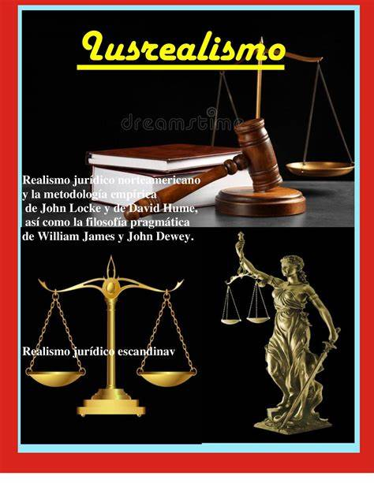

Teoría del Lusrealismo
La teoría del lusrealismo es un enfoque en la filosofía del derecho que enfatiza la realidad y el contexto práctico de las normas jurídicas. Este enfoque sostiene que el derecho no puede entenderse plenamente sin considerar su aplicación y los efectos reales que tiene en la sociedad. A continuación, se exploran en detalle los conceptos, características, implicaciones y relevancia de esta teoría en la práctica jurídica.
Conceptos Principales
El lusrealismo se basa en la idea de que el derecho debe ser estudiado y analizado no solo desde una perspectiva teórica, sino también a través de su impacto práctico y real en la vida cotidiana. Los principales conceptos de esta teoría incluyen:
- Realidad Jurídica: El lusrealismo se centra en cómo las normas jurídicas se aplican y afectan a las personas en situaciones reales.
- Contexto Social: Considera el contexto social y económico en el que operan las normas jurídicas, destacando la importancia de estos factores en la interpretación y aplicación del derecho.
- Pragmatismo Jurídico: El enfoque pragmático del lusrealismo subraya la necesidad de que el derecho sea útil y funcional en la resolución de problemas sociales.
Características del Lusrealismo
- Empirismo: Se basa en la observación empírica y el análisis de casos reales para entender cómo funciona el derecho en la práctica.
- Crítica a la Formalidad: Critica la visión formalista del derecho que se centra exclusivamente en la lógica interna de las normas sin considerar su impacto real.
- Flexibilidad: Promueve la flexibilidad en la interpretación y aplicación del derecho para adaptarse mejor a las necesidades y realidades sociales cambiantes.
Implicaciones del Lusrealismo
- Reforma Jurídica: El lusrealismo puede guiar reformas jurídicas que se basen en una comprensión realista de cómo las leyes afectan a la sociedad.
- Justicia Accesible: Promueve un enfoque del derecho que busca hacer la justicia más accesible y relevante para todas las personas.
- Análisis Crítico: Fomenta un análisis crítico de las normas y principios legales, cuestionando su efectividad y relevancia en contextos prácticos.
Relevancia en la Práctica Jurídica
La teoría del lusrealismo tiene una gran relevancia en la práctica jurídica contemporánea. Algunos de sus impactos incluyen:
- Desarrollo Normativo: Influye en la creación de normas que sean más efectivas y que reflejen mejor las necesidades y realidades sociales.
- Interpretación Judicial: Los jueces pueden utilizar un enfoque lusrealista para interpretar las leyes de manera que se alineen con las realidades prácticas y los principios de justicia.
- Educación Jurídica: La formación de abogados y juristas puede beneficiarse de un enfoque que combine la teoría jurídica con un entendimiento profundo de su aplicación práctica.
Representación

Video
Bibliografía
- Frank, J. (1930). Law and the Modern Mind. Coward-McCann.